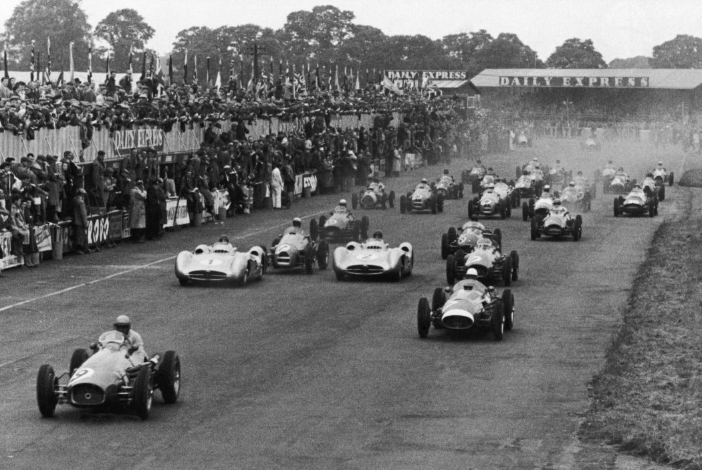
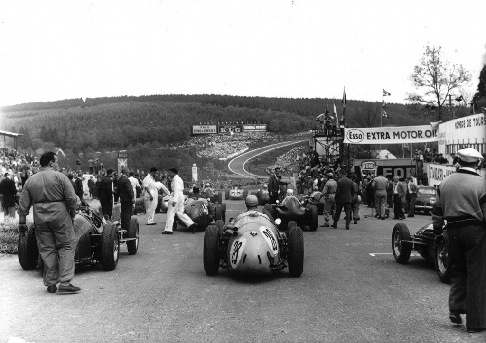
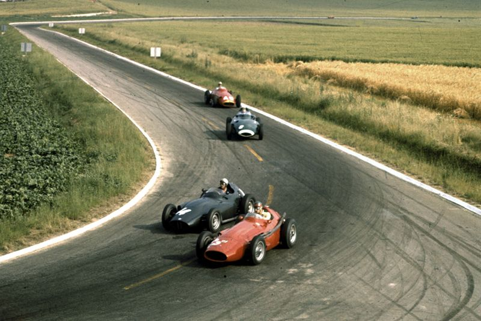
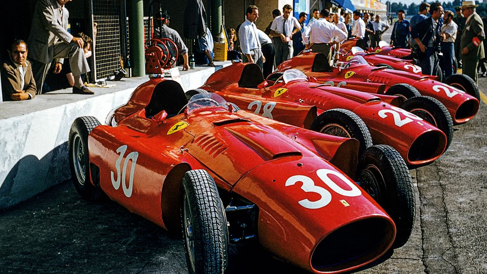
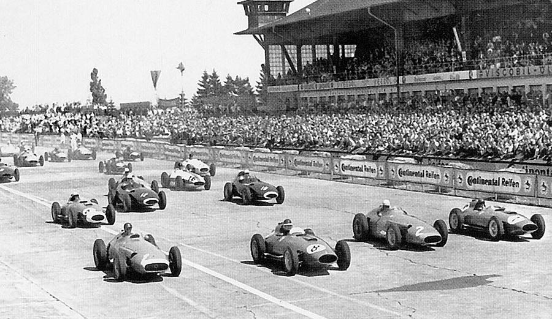
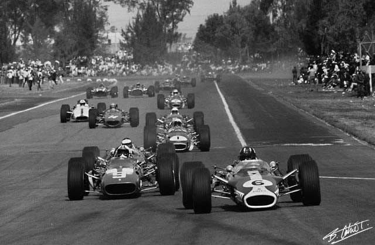
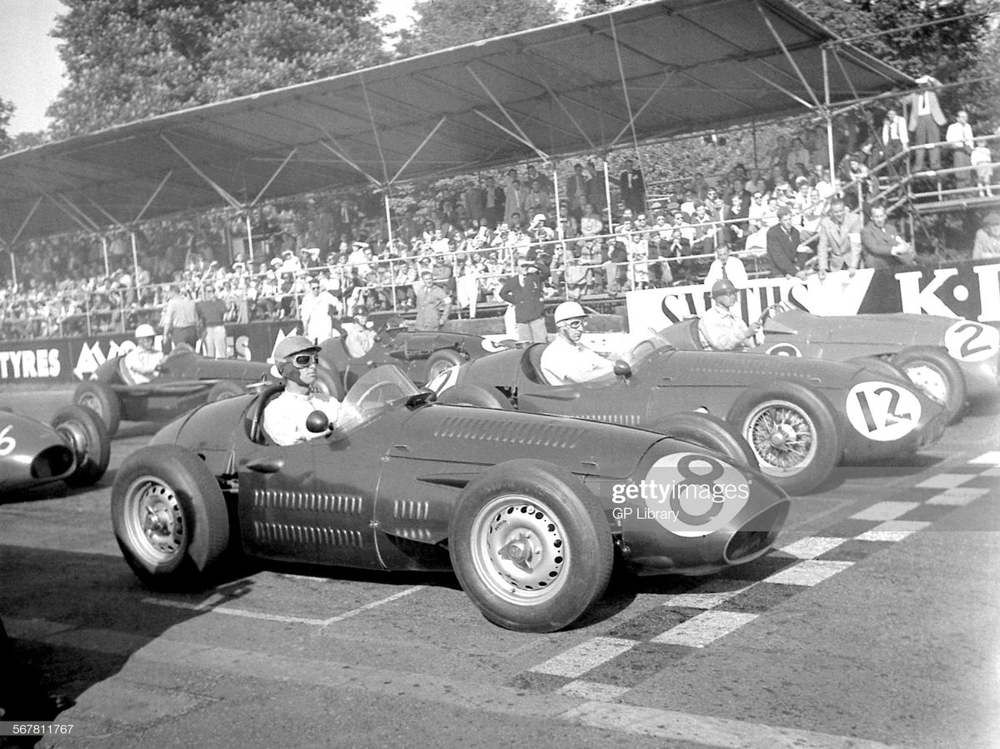
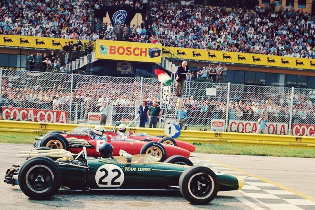
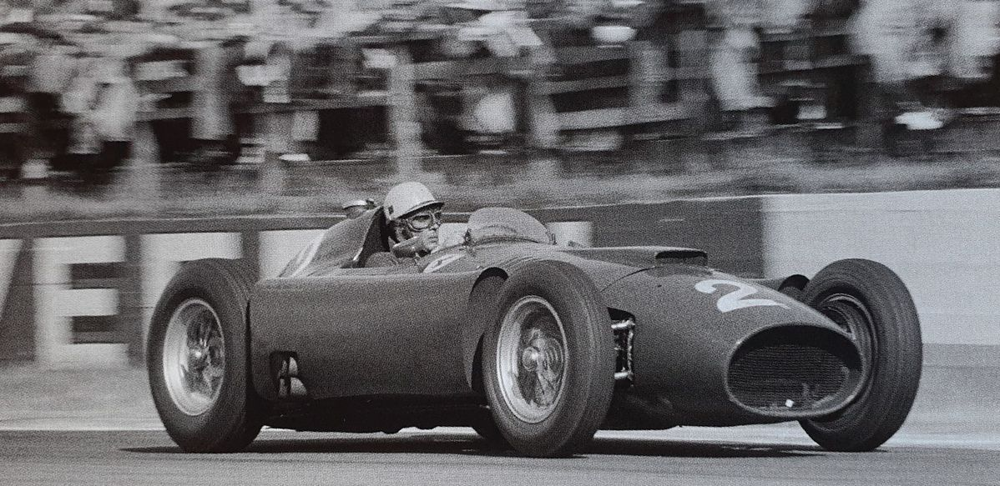
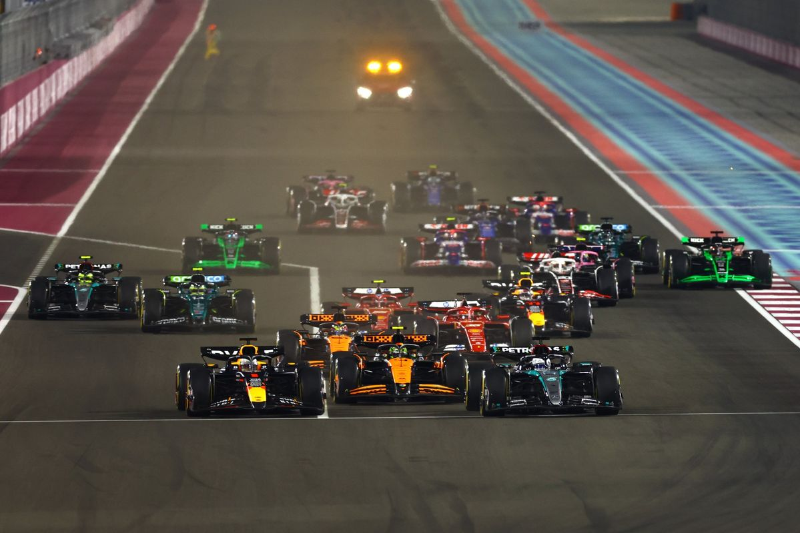
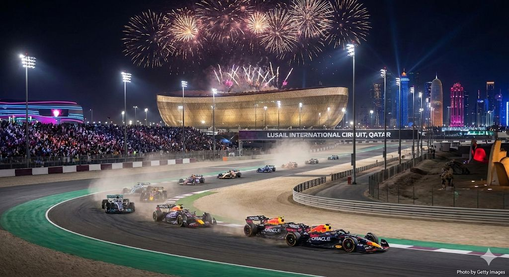
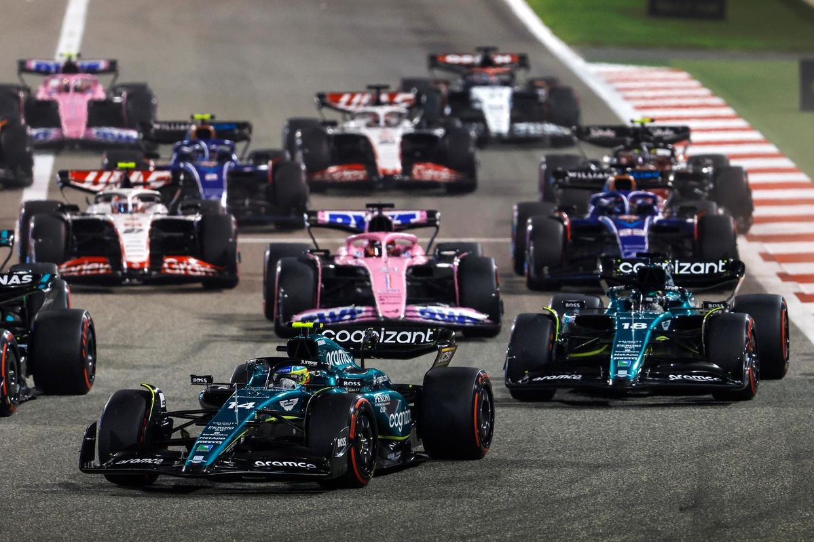
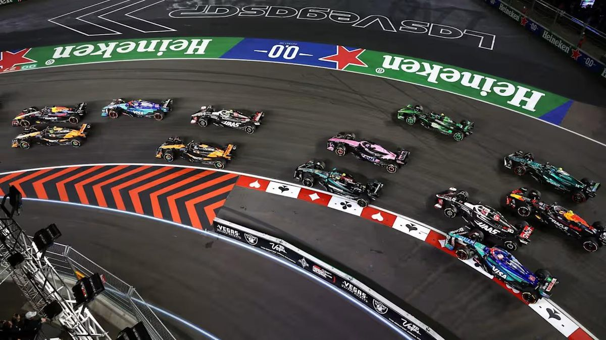
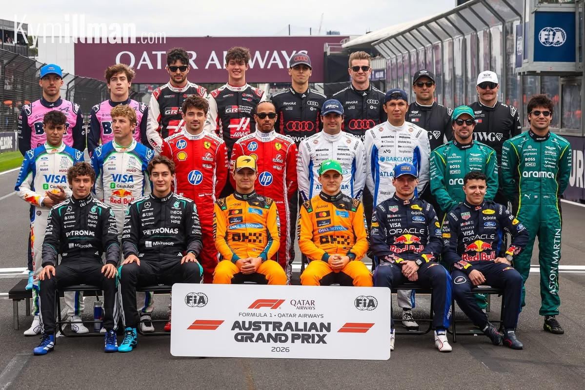
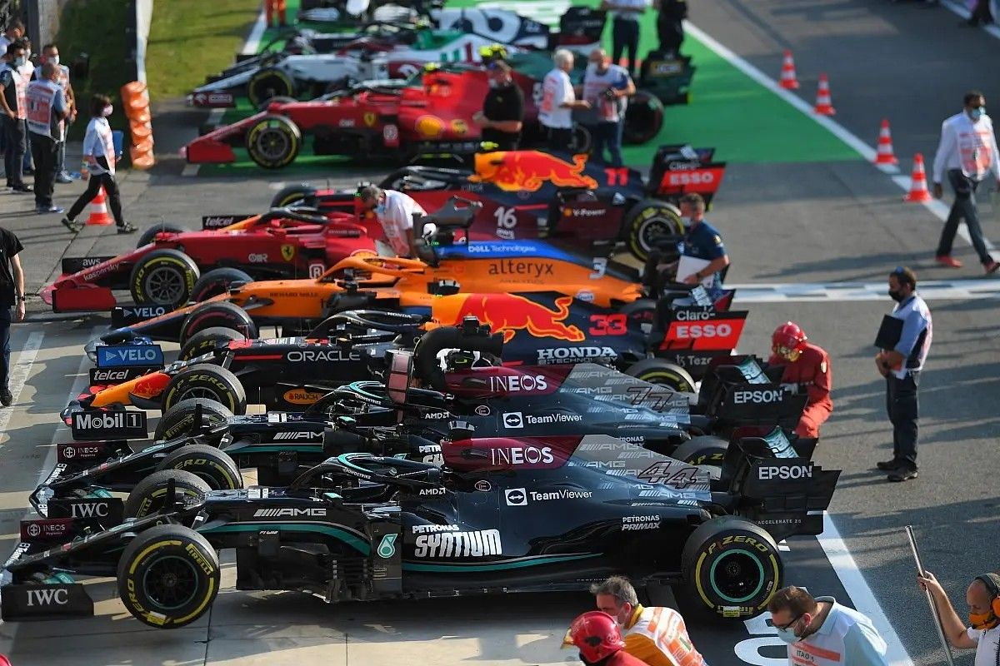
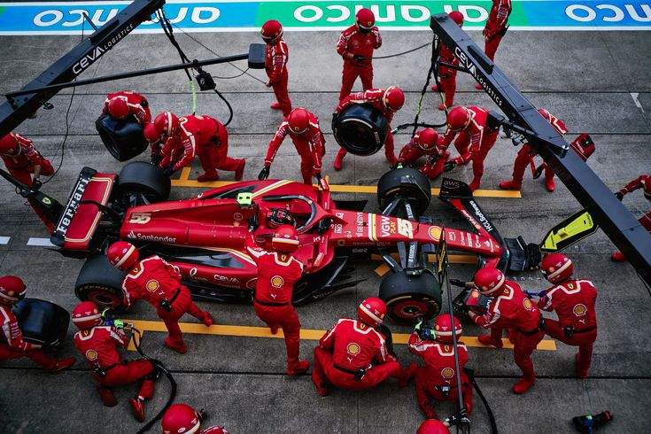
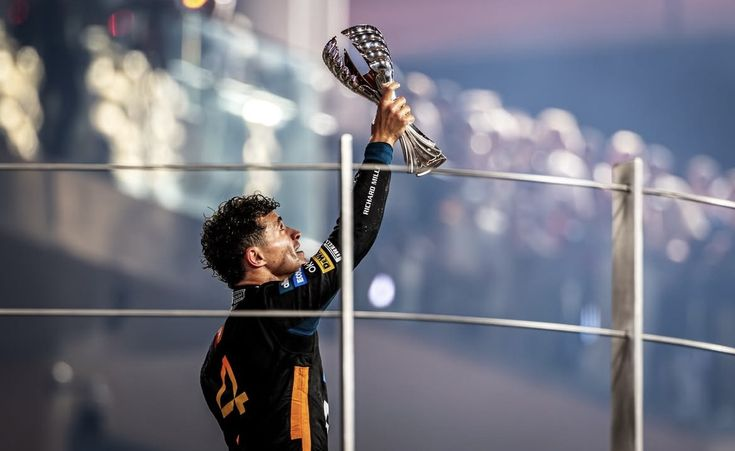
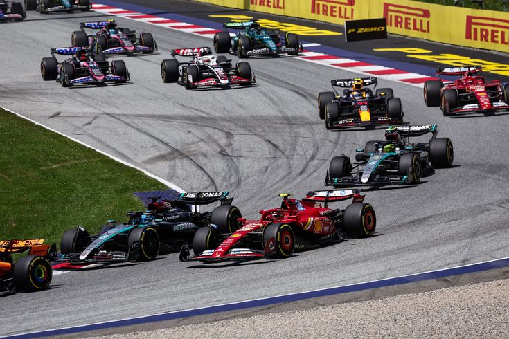
A modern Forma–1 alapjait az FIA 1946-ban fektette le, amikor egységesített szabályrendszert hoztak létre az európai nagydíjversenyzés számára. Ezt „Formula A / Formula I” néven emlegették, majd 1950‑ben vált hivatalosan a Formula 1 elnevezésű kategóriává. A korszak a háború előtti autók és motorformulák továbbélésével indult, például az Alfa Romeo 158-as dominanciájával.
Az első hivatalos F1‑es világbajnoki futamot 1950-ben Silverstone-ban rendezték, a bajnokságot Giuseppe Farina nyerte. A ’50‑es évek legmeghatározóbb versenyzője Juan Manuel Fangio volt, aki öt világbajnoki címet szerzett (1951, 1954–57), ez a rekord közel 50 évig érintetlen maradt.
Az 1980-as évektől a turbómotorok uralták a mezőnyt, egyes motorok 1000 lóerő fölötti teljesítményt is elértek.
Ikonikus történetek ebből a korszakból:A korszak újítása volt a boxkiállások alatti tankolás visszavezetése (1994), amely stratégiai forradalmat hozott.
A 2000-es évek elején a Ferrari és Schumacher dominanciája példa nélküli volt:öt egymást követő világbajnoki cím (2000–2004), csapatszinten a Ferrari is sorozatban győzött.
2014-ben érkeztek a hibrid V6 turbó-erőforrások, amelyek új erőviszonyokat teremtettek. A Mercedes példátlan dominanciát épített ki: Lewis Hamilton és Nico Rosberg révén többszörös egyéni és konstruktőri világbajnoki cím, Hamilton történelmi rekordok sora.
2021-től a Forma–1 új fejezetbe lépett. Max Verstappen többszörös világbajnokká vált, és a Red Bull ismét dominánssá vált. A 2020-as évek közepén a sport a fenntarthatóság és a technológiai innováció irányába fordult (például: karbonsemlegességi cél 2030-ra). 2026-ban jelentősen átalakulnak az aerodinamikai szabályok: a korábbi DRS helyét az X- és Z‑módú állítható aerodinamikai rendszer veszi át, amely fékezés és gyorsítás közben is manipulálja a szárnyakat.
Néhány fontosabb mai csapat eredete röviden:
Alapította: Bruce McLaren (1963) Bemutatkozás: 1966 Több mint 200 futamgyőzelem, legendás pilóták: Lauda, Prost, Senna.
Első F1-szereplés 1954–55 Fangióval, majd hosszú visszavonulás. A mai Mercedes a Tyrrell → BAR → Honda → Brawn GP láncolat után alakult ki, Mercedes 2010 óta van vissza a sportban.
Eredete: Stewart Grand Prix (1997) → Jaguar Racing (2000) → Red Bull Racing (2004). A modern éra egyik legsikeresebb konstruktőre.
A 2026-os szezon elején a világbajnoki tabella így állt:
A konstruktőröknél:
A Forma–1 több mint 75 éve a világ motorsportjának csúcsa. A háború utáni egyszerű technológiától eljutottunk a több száz km/h-s, hibrid, energia-visszanyerős, állítható aerodinamikájú csúcsgépekig. A sport történetét legendás pilóták, folyamatos technológiai innováció és a biztonság iránti elkötelezettség formálta. Ha szeretnéd, készíthetek idővonalat, csapatonkénti részletes történetet, vagy akár magyar F1-es vonatkozások külön összefoglalót is.